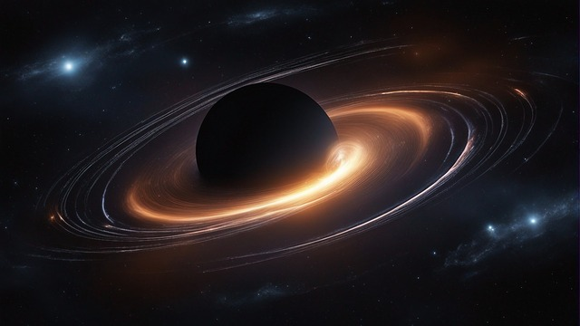

Como sao formados os burados negros?
Buracos negros são formados quando uma estrela massiva chega ao fim de sua vida e sofre um colapso gravitacional, resultando em uma região do espaço onde a gravidade é tão forte que nada, nem mesmo a luz, pode escapar. Existem alguns cenários principais que levam à formação de buracos negros: |
 | |
O que é necessário para formar um buraco negro?
Para que um buraco negro seja formado, é necessário que haja uma grande quantidade de massa concentrada em um pequeno espaço. Quanto maior a massa, mais forte será o campo gravitacional e, consequentemente, mais fácil será para a luz escapar da região. |
||
A descoberta dos burados negros
Os buracos negros foram descobertos a partir da observação de outros objetos astronômicos. A primeira descoberta foi feita em 1784, pelo astrônomo inglês John Michell. Michell observou que algumas estrelas tinham um campo gravitacional tão forte que nem a luz conseguia escapar delas. |
||
Buracos negros são caminhos de minhoca?Não são, apesar de muitas pessoas acreditarem que sim. Caminhos de minhoca são teorias da física que sugerem a existência de portais que podem transportar pessoas e objetos de um lugar para outro instantaneamente. No entanto, até o momento, não há nenhuma evidência científica que comprove a existência de caminhos de minhoca. |
||
| Desenvolvido por Evelyn Tolentino de Souza | ||